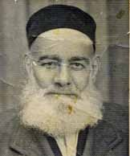

Ahmet Hamdi Okur (Çil Müftü) [1877-1953]

Birinci Cihan Harbi boyunca Antalya Müftülüðü yaptý. Millî Mücadele yýllarýndaki hizmetleri fermanlar ve ilmî rütbelerle taltif edildi. Bediüzzaman'a selâm gönderdiði için, üç ay Eskiþehir Hapishanesinde Üstad ile beraber yattý. Serbest kaldýktan sonra Eskiþehir hapishanesini "Gittiðimiz yer Hapishaneye benzemiyordu. Orada Bediüzzaman'la görüþmek, konuþmak benim için bir þeref oldu" diye anlatýyordu."Ýçinizde Müftü Efendi var"
Eskiþehir hapsinde, fýkhî meselelerde, Üstad Bediüzzaman'a sual sorduklarý zaman, Üstad, Çil Müftüyü eliyle göstererek "Ýçinizde Müftü Efendi var; o varken fetva vermek bana düþmez" diye tevazu ile Ahmed Hamdi Efendiye iltifat ederdi.
Çil Müftüye çamaþýr ipi
Ahmet Hamdi Okur, pehlivan yapýlý ve heybetli bir zat idi. Ellerine vurmak istedikleri kelepçeler hep dar geliyordu. Çil Müftü ise, "Bu eller devlete çok hizmet etti. Þimdi biraz da kelepçesini vurun" diyordu. Sonunda jandarmalar Müftünün ellerini çamaþýr ipiyle baðladýlar. (Kaynak: Barla Blatformu Kataloðu)